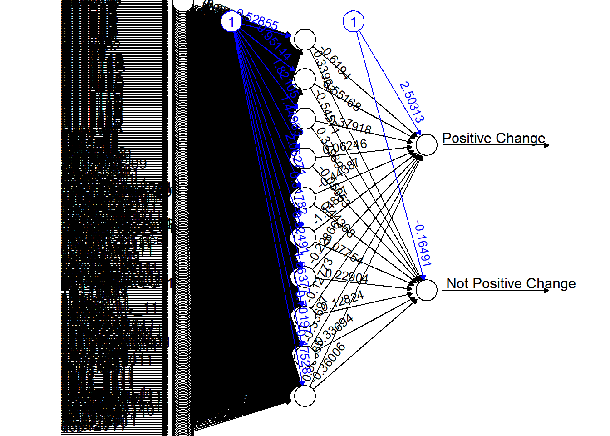
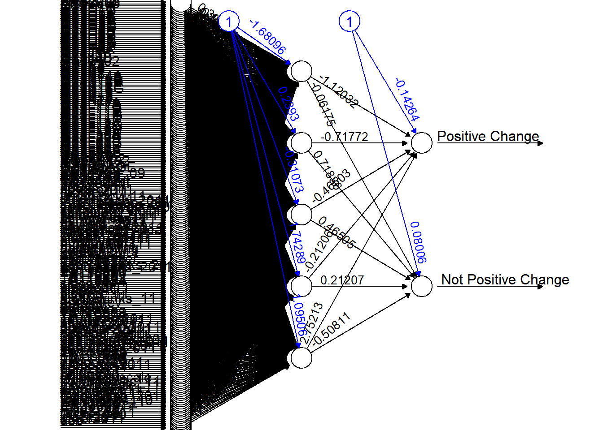
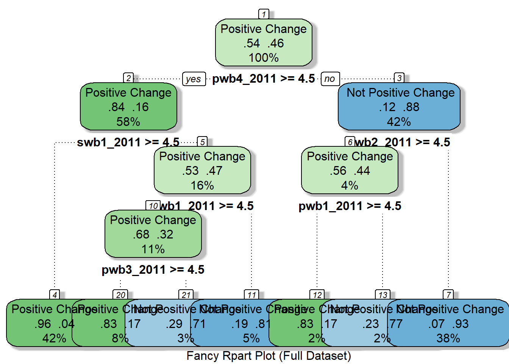
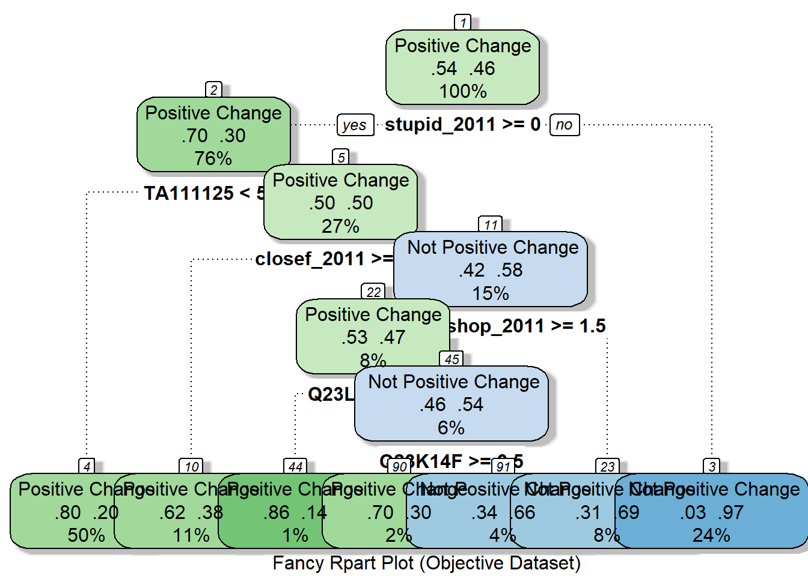
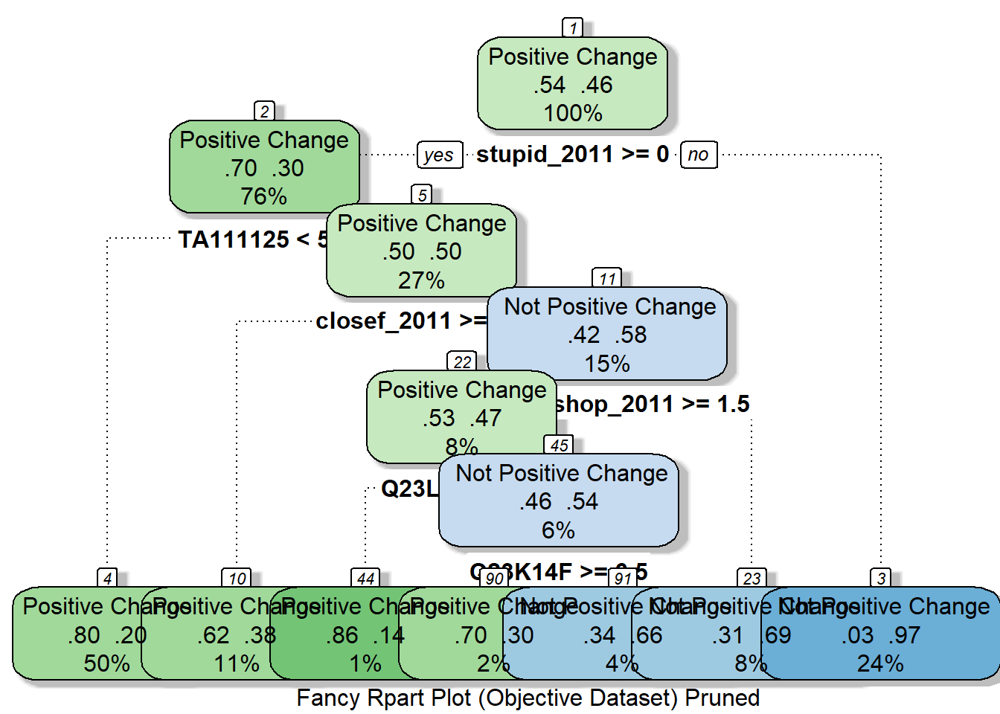

final_project_trees.Rmd.
library(C50)
library(rpart.plot)
library(rattle)
library(neuralnet)
library(kernlab)
# colnames(df_full_train) <- lapply(colnames(df_full_train[, -267]), fieldname_to_description)
# colnames(df_full_test) <- lapply(colnames(df_full_test[, -267]), fieldname_to_description)
df_full_train_new <- df_full_train[ , !names(df_full_train) %in% "PositiveChange"]
df_full_test_new <- df_full_test[ , !names(df_full_test) %in% "PositiveChange"]
df_objective_train_new <- df_objective_train[ , !names(df_objective_train) %in% "PositiveChange"]
df_objective_test_new <- df_objective_test[ , !names(df_objective_test) %in% "PositiveChange"]
confusionMatrix_to_vector <- function(mat) {
return(c(
round(mat$overall["Accuracy"], digits = 4),
round(mat$overall["Kappa"], digits = 4),
round(mat$byClass["Sensitivity"], digits = 4),
round(mat$byClass["Specificity"], digits = 4)
))
}
highlight_column <- function(col) {
cell_spec(col, background = ifelse(col == max(col), "yellow", "white"))
}net_full <- neuralnet(PositiveChange ~ ., df_full_train, hidden=10, threshold=0.1)
plot(net_full, rep="best")
pred_net_full <- compute(net_full, df_full_test)
# tbl_net_full <- table(pred_net_full$net.result, df_full_test$PositiveChange)
cor(pred_net_full$net.result, as.numeric(df_full_test$PositiveChange))## [,1]
## [1,] 0.4132693
## [2,] -0.4133341net_objective <- neuralnet(PositiveChange ~ ., df_objective_train, hidden=5, threshold=0.1)
plot(net_objective, rep="best")
pred_net_objective <- compute(net_objective, df_objective_test)
cor(pred_net_objective$net.result, as.numeric(df_objective_test$PositiveChange))## [,1]
## [1,] 0.2068527
## [2,] -0.2068733c50_model_full <- C5.0(df_full_train_new, df_full_train$PositiveChange)
c50_model_full##
## Call:
## C5.0.default(x = df_full_train_new, y = df_full_train$PositiveChange)
##
## Classification Tree
## Number of samples: 1572
## Number of predictors: 266
##
## Tree size: 51
##
## Non-standard options: attempt to group attributessummary(c50_model_full)##
## Call:
## C5.0.default(x = df_full_train_new, y = df_full_train$PositiveChange)
##
##
## C5.0 [Release 2.07 GPL Edition] Fri Dec 10 09:24:08 2021
## -------------------------------
##
## Class specified by attribute `outcome'
##
## Read 1572 cases (267 attributes) from undefined.data
##
## Decision tree:
##
## pwb6_2011 <= 4:
## :...swb1_2011 > 4:
## : :...helping_2011 > 6: Positive Change (10)
## : : helping_2011 <= 6:
## : : :...race2_2011 > -1: Positive Change (3)
## : : race2_2011 <= -1:
## : : :...pwb4_2011 <= 5:
## : : :...swb5_2011 <= 4: Not Positive Change (32/3)
## : : : swb5_2011 > 4: Positive Change (5/1)
## : : pwb4_2011 > 5:
## : : :...Q23K26A <= 3: Not Positive Change (2)
## : : Q23K26A > 3: Positive Change (11/1)
## : swb1_2011 <= 4:
## : :...artact_11 > 0:
## : :...barbev > 0: Positive Change (2)
## : : barbev <= 0:
## : : :...ER33605 > 4: Not Positive Change (21/1)
## : : ER33605 <= 4:
## : : :...pwb1_2011 <= 3: Not Positive Change (2)
## : : pwb1_2011 > 3: Positive Change (5)
## : artact_11 <= 0:
## : :...Q23L11B > 0:
## : :...GLBCN02 <= 2.67: Positive Change (4)
## : : GLBCN02 > 2.67:
## : : :...pwb2_02 > 1: Not Positive Change (27)
## : : pwb2_02 <= 1:
## : : :...Q23H6A <= 0: Not Positive Change (2)
## : : Q23H6A > 0: Positive Change (4)
## : Q23L11B <= 0:
## : :...amphetev > 0:
## : :...Q23H6E <= 1: Not Positive Change (12)
## : : Q23H6E > 1:
## : : :...TA111139 <= 3: Not Positive Change (12/2)
## : : TA111139 > 3: Positive Change (3)
## : amphetev <= 0:
## : :...Q23K14C <= 4: Not Positive Change (363/1)
## : Q23K14C > 4:
## : :...swb1_02 > 2: Not Positive Change (50)
## : swb1_02 <= 2:
## : :...Q23L13 > 1:
## : :...swb1_02 <= 1: Positive Change (6)
## : : swb1_02 > 1: Not Positive Change (5)
## : Q23L13 <= 1:
## : :...Q23L20 <= 1: Not Positive Change (38/1)
## : Q23L20 > 1:
## : :...Q23K14A <= 6: Positive Change (3)
## : Q23K14A > 6: Not Positive Change (4)
## pwb6_2011 > 4:
## :...pwb2_2011 > 4:
## :...pwb4_2011 <= 4:
## : :...swb4_2011 <= 4:
## : : :...smoke11 > 0: Not Positive Change (7)
## : : : smoke11 <= 0:
## : : : :...decisiveness_2011 <= 3: Positive Change (5)
## : : : decisiveness_2011 > 3: Not Positive Change (52/18)
## : : swb4_2011 > 4:
## : : :...Q23L22C <= 4: Positive Change (22)
## : : Q23L22C > 4:
## : : :...swb2_2011 <= 4: Not Positive Change (4)
## : : swb2_2011 > 4: Positive Change (5)
## : pwb4_2011 > 4:
## : :...pwb5_2011 <= 4:
## : :...swb2_2011 > 4: Positive Change (15)
## : : swb2_2011 <= 4:
## : : :...Q23L13H <= 1: Not Positive Change (10)
## : : Q23L13H > 1: Positive Change (4/1)
## : pwb5_2011 > 4:
## : :...swb1_2011 > 4: Positive Change (557)
## : swb1_2011 <= 4:
## : :...pwb1_2011 <= 4:
## : :...swb2_2011 <= 4: Not Positive Change (16/1)
## : : swb2_2011 > 4: Positive Change (6)
## : pwb1_2011 > 4:
## : :...pwb3_2011 > 4: Positive Change (90/1)
## : pwb3_2011 <= 4:
## : :...swb2_2011 <= 1: Not Positive Change (8)
## : swb2_2011 > 1: Positive Change (14/1)
## pwb2_2011 <= 4:
## :...swb3_2011 > 4: Positive Change (13/1)
## swb3_2011 <= 4:
## :...swb2_2011 > 4:
## :...worthless_2011 > 0: Not Positive Change (5)
## : worthless_2011 <= 0:
## : :...pwb4_2011 <= 3: Not Positive Change (2)
## : pwb4_2011 > 3:
## : :...TA111139 <= 1: Not Positive Change (2)
## : TA111139 > 1: Positive Change (20)
## swb2_2011 <= 4:
## :...pwb3_2011 <= 4: Not Positive Change (37/1)
## pwb3_2011 > 4:
## :...swb5_2011 > 4: Positive Change (6/1)
## swb5_2011 <= 4:
## :...anhed2wks_2011 > 0: Positive Change (5/1)
## anhed2wks_2011 <= 0:
## :...Q23K14F > 6: Not Positive Change (18)
## Q23K14F <= 6:
## :...k6sxfreq_2011 <= 1: Positive Change (3)
## k6sxfreq_2011 > 1:
## :...nonacadtrng <= 0: Not Positive Change (16/2)
## nonacadtrng > 0: Positive Change (4/1)
##
##
## Evaluation on training data (1572 cases):
##
## Decision Tree
## ----------------
## Size Errors
##
## 51 39( 2.5%) <<
##
##
## (a) (b) <-classified as
## ---- ----
## 816 30 (a): class Positive Change
## 9 717 (b): class Not Positive Change
##
##
## Attribute usage:
##
## 100.00% pwb6_2011
## 83.78% swb1_2011
## 60.18% pwb2_2011
## 56.55% pwb4_2011
## 45.80% pwb5_2011
## 35.81% artact_11
## 33.91% Q23L11B
## 31.55% amphetev
## 29.83% Q23K14C
## 12.79% pwb3_2011
## 12.72% swb2_2011
## 8.97% pwb1_2011
## 8.33% swb3_2011
## 6.74% swb1_02
## 6.04% swb4_2011
## 5.66% swb5_2011
## 4.07% smoke11
## 4.01% helping_2011
## 3.63% decisiveness_2011
## 3.56% Q23L13
## 3.37% race2_2011
## 2.93% anhed2wks_2011
## 2.86% Q23L20
## 2.61% Q23K14F
## 2.35% GLBCN02
## 2.35% TA111139
## 2.10% pwb2_02
## 1.97% Q23L22C
## 1.91% barbev
## 1.84% worthless_2011
## 1.78% ER33605
## 1.72% Q23H6E
## 1.46% k6sxfreq_2011
## 1.27% nonacadtrng
## 0.89% Q23L13H
## 0.83% Q23K26A
## 0.45% Q23K14A
## 0.38% Q23H6A
##
##
## Time: 0.1 secspred_C50_full <- predict(c50_model_full, df_full_test_new)
tbl_C50_full <- table(pred_C50_full, df_full_test$PositiveChange)
conf_C50_full <- confusionMatrix(tbl_C50_full)
conf_C50_full## Confusion Matrix and Statistics
##
##
## pred_C50_full Positive Change Not Positive Change
## Positive Change 184 19
## Not Positive Change 16 175
##
## Accuracy : 0.9112
## 95% CI : (0.8786, 0.9373)
## No Information Rate : 0.5076
## P-Value [Acc > NIR] : <2e-16
##
## Kappa : 0.8223
##
## Mcnemar's Test P-Value : 0.7353
##
## Sensitivity : 0.9200
## Specificity : 0.9021
## Pos Pred Value : 0.9064
## Neg Pred Value : 0.9162
## Prevalence : 0.5076
## Detection Rate : 0.4670
## Detection Prevalence : 0.5152
## Balanced Accuracy : 0.9110
##
## 'Positive' Class : Positive Change
## c50_model_objective <- C5.0(df_objective_train_new, df_objective_train$PositiveChange)
c50_model_objective##
## Call:
## C5.0.default(x = df_objective_train_new, y = df_objective_train$PositiveChange)
##
## Classification Tree
## Number of samples: 1572
## Number of predictors: 206
##
## Tree size: 119
##
## Non-standard options: attempt to group attributessummary(c50_model_objective)##
## Call:
## C5.0.default(x = df_objective_train_new, y = df_objective_train$PositiveChange)
##
##
## C5.0 [Release 2.07 GPL Edition] Fri Dec 10 09:24:09 2021
## -------------------------------
##
## Class specified by attribute `outcome'
##
## Read 1572 cases (207 attributes) from undefined.data
##
## Decision tree:
##
## employstat311 <= -1:
## :...Q23L11B <= 0: Not Positive Change (347/6)
## : Q23L11B > 0:
## : :...Q23J4 > 1: Positive Change (3)
## : Q23J4 <= 1:
## : :...GLBCN02 <= 2.67: Positive Change (2)
## : GLBCN02 > 2.67: Not Positive Change (21/1)
## employstat311 > -1:
## :...TA111125 <= 5:
## :...Q23J4 > 1:
## : :...asthma > 0: Not Positive Change (4)
## : : asthma <= 0:
## : : :...service_2011 <= 1: Positive Change (10)
## : : service_2011 > 1:
## : : :...ER32006 > 2: Positive Change (4)
## : : ER32006 <= 2:
## : : :...bmi_2011 > 2: Not Positive Change (7)
## : : bmi_2011 <= 2:
## : : :...Q23L13H <= 0: Not Positive Change (3)
## : : Q23L13H > 0: Positive Change (8/1)
## : Q23J4 <= 1:
## : :...dishonest_2011 > 1:
## : :...enrollstat_11 > 11:
## : : :...GLBCN02 <= 4.2: Not Positive Change (9)
## : : : GLBCN02 > 4.2: Positive Change (8/1)
## : : enrollstat_11 <= 11:
## : : :...socanxscale_11 <= 2:
## : : :...Q23H6H <= 1: Positive Change (29)
## : : : Q23H6H > 1:
## : : : :...dui_2011 > 1:
## : : : :...fallwintres_11 > 2: Positive Change (5)
## : : : : fallwintres_11 <= 2:
## : : : : :...dui_2011 <= 2: Not Positive Change (6)
## : : : : dui_2011 > 2: Positive Change (2)
## : : : dui_2011 <= 1:
## : : : :...voted_2010 > 0: Positive Change (22)
## : : : voted_2010 <= 0: [S1]
## : : socanxscale_11 > 2:
## : : :...sterev > 0: Positive Change (9)
## : : sterev <= 0:
## : : :...Q23L11I > 1: Positive Change (8)
## : : Q23L11I <= 1:
## : : :...relig_freq <= 2:
## : : :...hisp2011 > 0: Not Positive Change (7)
## : : : hisp2011 <= 0: [S2]
## : : relig_freq > 2:
## : : :...highbp > 0:
## : : :...Q23L22B <= 1: Not Positive Change (4)
## : : : Q23L22B > 1: Positive Change (2)
## : : highbp <= 0:
## : : :...race2_2011 > 1: [S3]
## : : race2_2011 <= 1:
## : : :...alc45drinks_11 > 8: [S4]
## : : alc45drinks_11 <= 8: [S5]
## : dishonest_2011 <= 1:
## : :...sleep11 <= 5: Positive Change (33)
## : sleep11 > 5:
## : :...Q23H6F <= 1:
## : :...Q23K8 > 3: Not Positive Change (6/1)
## : : Q23K8 <= 3:
## : : :...fight_2011 <= 1: Positive Change (61/10)
## : : fight_2011 > 1: Not Positive Change (4/1)
## : Q23H6F > 1:
## : :...relig_freq > 5: Positive Change (34)
## : relig_freq <= 5:
## : :...volunteer_2011 > 0:
## : :...TA110891 <= 1: Positive Change (59)
## : : TA110891 > 1:
## : : :...Q23H1B > 2: Not Positive Change (2)
## : : Q23H1B <= 2:
## : : :...Q23H5B > 3: Positive Change (18)
## : : Q23H5B <= 3: [S6]
## : volunteer_2011 <= 0:
## : :...Q23J4 > 0: Positive Change (29/1)
## : Q23J4 <= 0:
## : :...Q23K14C <= 1: Positive Change (38/1)
## : Q23K14C > 1:
## : :...Q23K19 > 1: [S7]
## : Q23K19 <= 1:
## : :...ER32006 > 2: Positive Change (13)
## : ER32006 <= 2:
## : :...highbp > 0: [S8]
## : highbp <= 0:
## : :...peerue_2011 > 2: [S9]
## : peerue_2011 <= 2:
## : :...ER32006 <= 1: [S10]
## : ER32006 > 1: [S11]
## TA111125 > 5:
## :...race1_2011 > 4:
## :...afraid_2011 > 1: Not Positive Change (13)
## : afraid_2011 <= 1:
## : :...GLBCN02 <= 3.67: Not Positive Change (5)
## : GLBCN02 > 3.67: Positive Change (5/1)
## race1_2011 <= 4:
## :...bingeeat11 > 5:
## :...TA111060 <= 1: Not Positive Change (4)
## : TA111060 > 1: Positive Change (26/1)
## bingeeat11 <= 5:
## :...depress2wks_2011 > 0:
## :...peerjob_2011 > 4: Positive Change (7/1)
## : peerjob_2011 <= 4:
## : :...fallwintres_11 > 2: Not Positive Change (13)
## : fallwintres_11 <= 2:
## : :...Q23H1B > 2: Positive Change (6/1)
## : Q23H1B <= 2:
## : :...TA111060 <= 5:
## : :...Q23L11D > 2: Positive Change (2)
## : : Q23L11D <= 2: [S12]
## : TA111060 > 5:
## : :...Q23H5E <= 2: Not Positive Change (8)
## : Q23H5E > 2: [S13]
## depress2wks_2011 <= 0:
## :...Q23H5C > 0:
## :...internetev_11 <= 0: Not Positive Change (2)
## : internetev_11 > 0:
## : :...peercoll_2011 <= 4: Positive Change (28)
## : peercoll_2011 > 4: Not Positive Change (2)
## Q23H5C <= 0:
## :...worryscale_11 > 6: Not Positive Change (15/2)
## worryscale_11 <= 6:
## :...Q23K21 > 8.7:
## :...ER51743 > 1: Positive Change (9)
## : ER51743 <= 1:
## : :...psychdxever > 0: Positive Change (9)
## : psychdxever <= 0: [S14]
## Q23K21 <= 8.7:
## :...TA110969 <= 0:
## :...ER33603 > 30: Positive Change (2)
## : ER33603 <= 30:
## : :...Q23H1A <= 1: Not Positive Change (14)
## : Q23H1A > 1: [S15]
## TA110969 > 0:
## :...dui_2011 > 2:
## :...Q23L11D > 0: Positive Change (4/1)
## : Q23L11D <= 0: [S16]
## dui_2011 <= 2:
## :...Q23H1C > 1: Positive Change (7)
## Q23H1C <= 1: [S17]
##
## SubTree [S1]
##
## socialnetwork_2011 <= 4: Positive Change (18)
## socialnetwork_2011 > 4:
## :...Q23H6K <= 1: Positive Change (5)
## Q23H6K > 1:
## :...Q23K7 > 1: Not Positive Change (4)
## Q23K7 <= 1:
## :...smoke11 <= 0: Positive Change (7)
## smoke11 > 0: Not Positive Change (2)
##
## SubTree [S2]
##
## dtpillev <= 0: Positive Change (59/27)
## dtpillev > 0: Not Positive Change (9/1)
##
## SubTree [S3]
##
## Q23K4 <= 1: Not Positive Change (4)
## Q23K4 > 1: Positive Change (2)
##
## SubTree [S4]
##
## TA111139 <= 2: Positive Change (5)
## TA111139 > 2: Not Positive Change (7/1)
##
## SubTree [S5]
##
## doc_pstyr > 0: Positive Change (38)
## doc_pstyr <= 0:
## :...Q23J1 > 6: Not Positive Change (2)
## Q23J1 <= 6:
## :...Q23H5E <= 2: Not Positive Change (3/1)
## Q23H5E > 2: Positive Change (10)
##
## SubTree [S6]
##
## Q23K8 <= 1: Positive Change (3)
## Q23K8 > 1: Not Positive Change (3)
##
## SubTree [S7]
##
## relig_pref > 0: Positive Change (41/2)
## relig_pref <= 0:
## :...race <= 0: Not Positive Change (2)
## race > 0: Positive Change (4)
##
## SubTree [S8]
##
## Q23K5 <= 1: Not Positive Change (5)
## Q23K5 > 1: Positive Change (2)
##
## SubTree [S9]
##
## Q23K14D <= 5: Positive Change (5/1)
## Q23K14D > 5: Not Positive Change (6)
##
## SubTree [S10]
##
## Q23K3 <= 1: Positive Change (6/1)
## Q23K3 > 1: Not Positive Change (5)
##
## SubTree [S11]
##
## peercoll_2011 <= 3:
## :...Q23H6H > 1: Positive Change (40/1)
## : Q23H6H <= 1:
## : :...Q23H5B <= 4: Not Positive Change (2)
## : Q23H5B > 4: Positive Change (2)
## peercoll_2011 > 3:
## :...Q23H6D <= 1:
## :...employstat211 <= 6: Not Positive Change (6)
## : employstat211 > 6: Positive Change (3)
## Q23H6D > 1:
## :...ER34103 > 20: Positive Change (15)
## ER34103 <= 20:
## :...Q23K4 <= 1: Not Positive Change (6/1)
## Q23K4 > 1: Positive Change (6)
##
## SubTree [S12]
##
## SOCINT02 <= 5.4: Not Positive Change (31)
## SOCINT02 > 5.4: Positive Change (3/1)
##
## SubTree [S13]
##
## summerres_11 <= 1: Not Positive Change (3)
## summerres_11 > 1:
## :...earnlvg_2011 <= 2: Not Positive Change (2)
## earnlvg_2011 > 2: Positive Change (13/1)
##
## SubTree [S14]
##
## respect_2011 > 3: Positive Change (15/1)
## respect_2011 <= 3:
## :...nonacadtrng > 0: Positive Change (4)
## nonacadtrng <= 0:
## :...BULLY02 > 1.5: Not Positive Change (7)
## BULLY02 <= 1.5:
## :...TA110969 <= 0: Not Positive Change (6/1)
## TA110969 > 0:
## :...superior_2011 > 3: Not Positive Change (2)
## superior_2011 <= 3:
## :...TA111139 <= 3: Positive Change (11)
## TA111139 > 3: Not Positive Change (3/1)
##
## SubTree [S15]
##
## Q23L12G <= 1: Positive Change (3)
## Q23L12G > 1: Not Positive Change (7/1)
##
## SubTree [S16]
##
## Q23L22B <= 5: Not Positive Change (15)
## Q23L22B > 5: Positive Change (2)
##
## SubTree [S17]
##
## worryscale_11 <= 2: Positive Change (14/1)
## worryscale_11 > 2:
## :...Q23H1D > 2: Positive Change (5)
## Q23H1D <= 2:
## :...ER32006 <= 1: Not Positive Change (7)
## ER32006 > 1:
## :...fathered_11 > 16:
## :...Q23L11C <= 50: Positive Change (11)
## : Q23L11C > 50: Not Positive Change (2)
## fathered_11 <= 16:
## :...GLBCN02 <= 3.33:
## :...sterev > 0: Not Positive Change (2)
## : sterev <= 0:
## : :...cigct11 > 5: Not Positive Change (2)
## : cigct11 <= 5:
## : :...closef_2011 <= 4: Not Positive Change (3/1)
## : closef_2011 > 4: Positive Change (14)
## GLBCN02 > 3.33:
## :...Q23H5H <= 2:
## :...peerprnt_2011 <= 2: Not Positive Change (20)
## : peerprnt_2011 > 2:
## : :...closem_2011 <= 6: Not Positive Change (4)
## : closem_2011 > 6: Positive Change (3)
## Q23H5H > 2:
## :...Q23L22D > 5: Not Positive Change (6)
## Q23L22D <= 5:
## :...Q23K21 <= 6.4: Not Positive Change (4)
## Q23K21 > 6.4:
## :...ER32006 <= 2: Positive Change (10)
## ER32006 > 2: Not Positive Change (3/1)
##
##
## Evaluation on training data (1572 cases):
##
## Decision Tree
## ----------------
## Size Errors
##
## 119 75( 4.8%) <<
##
##
## (a) (b) <-classified as
## ---- ----
## 826 20 (a): class Positive Change
## 55 671 (b): class Not Positive Change
##
##
## Attribute usage:
##
## 100.00% employstat311
## 76.27% TA111125
## 51.34% Q23J4
## 47.39% dishonest_2011
## 32.25% relig_freq
## 29.20% sleep11
## 27.10% Q23H6F
## 26.59% race1_2011
## 25.13% bingeeat11
## 23.73% Q23L11B
## 23.22% depress2wks_2011
## 20.42% volunteer_2011
## 18.19% enrollstat_11
## 17.62% Q23H5C
## 17.11% socanxscale_11
## 15.59% worryscale_11
## 14.95% ER32006
## 14.63% Q23K21
## 13.30% dui_2011
## 13.17% Q23K14C
## 12.09% sterev
## 11.83% highbp
## 11.83% TA110969
## 10.75% Q23K19
## 10.18% Q23L11I
## 9.16% Q23H6H
## 7.70% GLBCN02
## 7.44% Q23H1C
## 7.00% peercoll_2011
## 6.49% peerue_2011
## 6.11% Q23H1D
## 5.98% Q23H1B
## 5.98% fallwintres_11
## 5.85% TA111060
## 5.60% peerjob_2011
## 5.41% TA110891
## 5.34% fathered_11
## 4.90% Q23K8
## 4.77% hisp2011
## 4.52% race2_2011
## 4.33% dtpillev
## 4.20% ER51743
## 4.13% alc45drinks_11
## 4.13% fight_2011
## 3.69% voted_2010
## 3.63% Q23L11D
## 3.63% psychdxever
## 3.37% doc_pstyr
## 3.18% Q23H5H
## 3.05% respect_2011
## 2.99% relig_pref
## 2.48% Q23H5E
## 2.29% Q23H6D
## 2.29% socialnetwork_2011
## 2.29% asthma
## 2.16% SOCINT02
## 2.10% nonacadtrng
## 2.04% internetev_11
## 2.04% service_2011
## 1.84% BULLY02
## 1.78% Q23H5B
## 1.72% ER34103
## 1.72% peerprnt_2011
## 1.65% ER33603
## 1.65% TA111139
## 1.53% Q23H1A
## 1.46% Q23L22B
## 1.46% Q23L22D
## 1.46% afraid_2011
## 1.21% cigct11
## 1.15% Q23H6K
## 1.15% Q23K4
## 1.15% summerres_11
## 1.15% bmi_2011
## 1.08% closef_2011
## 1.02% superior_2011
## 0.95% Q23J1
## 0.95% earnlvg_2011
## 0.83% Q23K7
## 0.83% Q23L11C
## 0.70% Q23K3
## 0.70% Q23K14D
## 0.70% Q23L13H
## 0.64% Q23L12G
## 0.57% employstat211
## 0.57% smoke11
## 0.45% Q23K5
## 0.45% closem_2011
## 0.38% race
##
##
## Time: 0.2 secspred_C50_objective <- predict(c50_model_objective, df_objective_test_new)
tbl_C50_objective <- table(pred_C50_objective, df_objective_test$PositiveChange)
conf_C50_objective <- confusionMatrix(tbl_C50_objective)
conf_C50_objective## Confusion Matrix and Statistics
##
##
## pred_C50_objective Positive Change Not Positive Change
## Positive Change 148 64
## Not Positive Change 52 130
##
## Accuracy : 0.7056
## 95% CI : (0.6579, 0.7502)
## No Information Rate : 0.5076
## P-Value [Acc > NIR] : 1.082e-15
##
## Kappa : 0.4105
##
## Mcnemar's Test P-Value : 0.3071
##
## Sensitivity : 0.7400
## Specificity : 0.6701
## Pos Pred Value : 0.6981
## Neg Pred Value : 0.7143
## Prevalence : 0.5076
## Detection Rate : 0.3756
## Detection Prevalence : 0.5381
## Balanced Accuracy : 0.7051
##
## 'Positive' Class : Positive Change
## rpart_model_full <- rpart(PositiveChange ~ ., data = df_full_train, cp=0.01)
rpart_model_full## n= 1572
##
## node), split, n, loss, yval, (yprob)
## * denotes terminal node
##
## 1) root 1572 726 Positive Change (0.53816794 0.46183206)
## 2) pwb4_2011>=4.5 914 145 Positive Change (0.84135667 0.15864333)
## 4) swb1_2011>=4.5 666 29 Positive Change (0.95645646 0.04354354) *
## 5) swb1_2011< 4.5 248 116 Positive Change (0.53225806 0.46774194)
## 10) pwb1_2011>=4.5 174 56 Positive Change (0.67816092 0.32183908)
## 20) pwb3_2011>=4.5 126 22 Positive Change (0.82539683 0.17460317) *
## 21) pwb3_2011< 4.5 48 14 Not Positive Change (0.29166667 0.70833333) *
## 11) pwb1_2011< 4.5 74 14 Not Positive Change (0.18918919 0.81081081) *
## 3) pwb4_2011< 4.5 658 77 Not Positive Change (0.11702128 0.88297872)
## 6) swb2_2011>=4.5 66 29 Positive Change (0.56060606 0.43939394)
## 12) pwb1_2011>=4.5 36 6 Positive Change (0.83333333 0.16666667) *
## 13) pwb1_2011< 4.5 30 7 Not Positive Change (0.23333333 0.76666667) *
## 7) swb2_2011< 4.5 592 40 Not Positive Change (0.06756757 0.93243243) *fancyRpartPlot(rpart_model_full, cex = 1, caption = "Fancy Rpart Plot (Full Dataset)")
pred_rpart_full <- predict(rpart_model_full, df_full_test, type = 'class')
tbl_rpart_full <- table(pred_rpart_full, df_full_test$PositiveChange)
conf_rpart_full <- confusionMatrix(tbl_rpart_full)
conf_rpart_full## Confusion Matrix and Statistics
##
##
## pred_rpart_full Positive Change Not Positive Change
## Positive Change 180 18
## Not Positive Change 20 176
##
## Accuracy : 0.9036
## 95% CI : (0.87, 0.9308)
## No Information Rate : 0.5076
## P-Value [Acc > NIR] : <2e-16
##
## Kappa : 0.8071
##
## Mcnemar's Test P-Value : 0.8711
##
## Sensitivity : 0.9000
## Specificity : 0.9072
## Pos Pred Value : 0.9091
## Neg Pred Value : 0.8980
## Prevalence : 0.5076
## Detection Rate : 0.4569
## Detection Prevalence : 0.5025
## Balanced Accuracy : 0.9036
##
## 'Positive' Class : Positive Change
## rpart_model_pruned_full <- prune(rpart_model_full, cp = rpart_model_full$cptable[which.min(rpart_model_full$cptable[,"xerror"]),"CP"])
fancyRpartPlot(rpart_model_pruned_full, cex = 1, caption = "Fancy Rpart Plot (Full Dataset) Pruned")pred_rpart_pruned_full <- predict(rpart_model_pruned_full, df_full_test, type = 'class')
tbl_rpart_pruned_full <- table(pred_rpart_pruned_full, df_full_test$PositiveChange)
conf_rpart_pruned_full <- confusionMatrix(tbl_rpart_pruned_full)
conf_rpart_pruned_full## Confusion Matrix and Statistics
##
##
## pred_rpart_pruned_full Positive Change Not Positive Change
## Positive Change 180 18
## Not Positive Change 20 176
##
## Accuracy : 0.9036
## 95% CI : (0.87, 0.9308)
## No Information Rate : 0.5076
## P-Value [Acc > NIR] : <2e-16
##
## Kappa : 0.8071
##
## Mcnemar's Test P-Value : 0.8711
##
## Sensitivity : 0.9000
## Specificity : 0.9072
## Pos Pred Value : 0.9091
## Neg Pred Value : 0.8980
## Prevalence : 0.5076
## Detection Rate : 0.4569
## Detection Prevalence : 0.5025
## Balanced Accuracy : 0.9036
##
## 'Positive' Class : Positive Change
## rpart_model_objective <- rpart(PositiveChange ~ ., data = df_objective_train, cp=0.01)
rpart_model_objective## n= 1572
##
## node), split, n, loss, yval, (yprob)
## * denotes terminal node
##
## 1) root 1572 726 Positive Change (0.53816794 0.46183206)
## 2) stupid_2011>=0 1198 364 Positive Change (0.69616027 0.30383973)
## 4) TA111125< 5.5 780 157 Positive Change (0.79871795 0.20128205) *
## 5) TA111125>=5.5 418 207 Positive Change (0.50478469 0.49521531)
## 10) closef_2011>=5.5 177 67 Positive Change (0.62146893 0.37853107) *
## 11) closef_2011< 5.5 241 101 Not Positive Change (0.41908714 0.58091286)
## 22) internetshop_2011>=1.5 118 55 Positive Change (0.53389831 0.46610169)
## 44) Q23L31>=1.5 21 3 Positive Change (0.85714286 0.14285714) *
## 45) Q23L31< 1.5 97 45 Not Positive Change (0.46391753 0.53608247)
## 90) Q23K14F>=6.5 33 10 Positive Change (0.69696970 0.30303030) *
## 91) Q23K14F< 6.5 64 22 Not Positive Change (0.34375000 0.65625000) *
## 23) internetshop_2011< 1.5 123 38 Not Positive Change (0.30894309 0.69105691) *
## 3) stupid_2011< 0 374 12 Not Positive Change (0.03208556 0.96791444) *fancyRpartPlot(rpart_model_objective, cex = 1, caption = "Fancy Rpart Plot (Objective Dataset)")
pred_rpart_objective <- predict(rpart_model_objective, df_objective_test, type = 'class')
tbl_rpart_objective <- table(pred_rpart_objective, df_objective_test$PositiveChange)
conf_rpart_objective <- confusionMatrix(tbl_rpart_objective)
conf_rpart_objective## Confusion Matrix and Statistics
##
##
## pred_rpart_objective Positive Change Not Positive Change
## Positive Change 172 81
## Not Positive Change 28 113
##
## Accuracy : 0.7234
## 95% CI : (0.6763, 0.767)
## No Information Rate : 0.5076
## P-Value [Acc > NIR] : < 2.2e-16
##
## Kappa : 0.4443
##
## Mcnemar's Test P-Value : 6.336e-07
##
## Sensitivity : 0.8600
## Specificity : 0.5825
## Pos Pred Value : 0.6798
## Neg Pred Value : 0.8014
## Prevalence : 0.5076
## Detection Rate : 0.4365
## Detection Prevalence : 0.6421
## Balanced Accuracy : 0.7212
##
## 'Positive' Class : Positive Change
## rpart_model_pruned_objective <- prune(rpart_model_objective, cp = rpart_model_objective$cptable[which.min(rpart_model_objective$cptable[,"xerror"]),"CP"])
fancyRpartPlot(rpart_model_pruned_objective, cex = 1, caption = "Fancy Rpart Plot (Objective Dataset) Pruned")
pred_rpart_pruned_objective <- predict(rpart_model_pruned_objective, df_objective_test, type = 'class')
tbl_rpart_pruned_objective <- table(pred_rpart_pruned_objective, df_objective_test$PositiveChange)
conf_rpart_pruned_objective <- confusionMatrix(tbl_rpart_pruned_objective)
conf_rpart_pruned_objective## Confusion Matrix and Statistics
##
##
## pred_rpart_pruned_objective Positive Change Not Positive Change
## Positive Change 172 81
## Not Positive Change 28 113
##
## Accuracy : 0.7234
## 95% CI : (0.6763, 0.767)
## No Information Rate : 0.5076
## P-Value [Acc > NIR] : < 2.2e-16
##
## Kappa : 0.4443
##
## Mcnemar's Test P-Value : 6.336e-07
##
## Sensitivity : 0.8600
## Specificity : 0.5825
## Pos Pred Value : 0.6798
## Neg Pred Value : 0.8014
## Prevalence : 0.5076
## Detection Rate : 0.4365
## Detection Prevalence : 0.6421
## Balanced Accuracy : 0.7212
##
## 'Positive' Class : Positive Change
## rbf_full <- ksvm(PositiveChange ~ ., data = df_full_train, kernel = "rbfdot")
pred_rbf_full <- predict(rbf_full, df_full_test)
tbl_rbf_full <- table(pred_rbf_full, df_full_test$PositiveChange)
conf_rbf_full <- confusionMatrix(tbl_rbf_full)
conf_rbf_full## Confusion Matrix and Statistics
##
##
## pred_rbf_full Positive Change Not Positive Change
## Positive Change 183 30
## Not Positive Change 17 164
##
## Accuracy : 0.8807
## 95% CI : (0.8445, 0.911)
## No Information Rate : 0.5076
## P-Value [Acc > NIR] : < 2e-16
##
## Kappa : 0.7611
##
## Mcnemar's Test P-Value : 0.08005
##
## Sensitivity : 0.9150
## Specificity : 0.8454
## Pos Pred Value : 0.8592
## Neg Pred Value : 0.9061
## Prevalence : 0.5076
## Detection Rate : 0.4645
## Detection Prevalence : 0.5406
## Balanced Accuracy : 0.8802
##
## 'Positive' Class : Positive Change
## rbf_objective <- ksvm(PositiveChange ~ ., data = df_objective_train, kernel = "rbfdot")
pred_rbf_objective <- predict(rbf_objective, df_objective_test)
tbl_rbf_objective <- table(pred_rbf_objective, df_objective_test$PositiveChange)
conf_rbf_objective <- confusionMatrix(tbl_rbf_objective)
conf_rbf_objective## Confusion Matrix and Statistics
##
##
## pred_rbf_objective Positive Change Not Positive Change
## Positive Change 183 83
## Not Positive Change 17 111
##
## Accuracy : 0.7462
## 95% CI : (0.7002, 0.7884)
## No Information Rate : 0.5076
## P-Value [Acc > NIR] : < 2.2e-16
##
## Kappa : 0.4897
##
## Mcnemar's Test P-Value : 8.032e-11
##
## Sensitivity : 0.9150
## Specificity : 0.5722
## Pos Pred Value : 0.6880
## Neg Pred Value : 0.8672
## Prevalence : 0.5076
## Detection Rate : 0.4645
## Detection Prevalence : 0.6751
## Balanced Accuracy : 0.7436
##
## 'Positive' Class : Positive Change
## As shown below, the C5.0 model performed the best for the full dataset. However, for the objective dataset, RBF performed better with the C5.0 performance dropping quite significantly. Overall the models performed much better with the full dataset. For some reason, the Neural Net performed quite poorly.
vect_C50_full <- confusionMatrix_to_vector(conf_C50_full)
vect_rpart_full <- confusionMatrix_to_vector(conf_rpart_full)
vect_rpart_pruned_full <- confusionMatrix_to_vector(conf_rpart_pruned_full)
vect_rbf_full <- confusionMatrix_to_vector(conf_rbf_full)
df_stats_full <- data.frame(C50 = vect_C50_full, RPart = vect_rpart_full, RPartPruned = vect_rpart_pruned_full, RBF = vect_rbf_full)
df_stats_full <- as.data.frame(t(df_stats_full))
df_stats_full$Accuracy <- highlight_column(df_stats_full$Accuracy)
df_stats_full$Kappa <- highlight_column(df_stats_full$Kappa)
df_stats_full$Sensitivity <- highlight_column(df_stats_full$Sensitivity)
df_stats_full$Specificity <- highlight_column(df_stats_full$Specificity)
df_stats_full %>%
kbl(escape = F) %>%
kable_styling()| Accuracy | Kappa | Sensitivity | Specificity | |
|---|---|---|---|---|
| C50 | 0.9112 | 0.8223 | 0.92 | 0.9021 |
| RPart | 0.9036 | 0.8071 | 0.9 | 0.9072 |
| RPartPruned | 0.9036 | 0.8071 | 0.9 | 0.9072 |
| RBF | 0.8807 | 0.7611 | 0.915 | 0.8454 |
vect_C50_objective <- confusionMatrix_to_vector(conf_C50_objective)
vect_rpart_objective <- confusionMatrix_to_vector(conf_rpart_objective)
vect_rpart_pruned_objective <- confusionMatrix_to_vector(conf_rpart_pruned_objective)
vect_rbf_objective <- confusionMatrix_to_vector(conf_rbf_objective)
df_stats_objective <- data.frame(C50 = vect_C50_objective, RPart = vect_rpart_objective, RPartPruned = vect_rpart_pruned_objective, RBF = vect_rbf_objective)
df_stats_objective <- as.data.frame(t(df_stats_objective))
df_stats_objective$Accuracy <- highlight_column(df_stats_objective$Accuracy)
df_stats_objective$Kappa <- highlight_column(df_stats_objective$Kappa)
df_stats_objective$Sensitivity <- highlight_column(df_stats_objective$Sensitivity)
df_stats_objective$Specificity <- highlight_column(df_stats_objective$Specificity)
df_stats_objective %>%
kbl(escape = F) %>%
kable_styling()| Accuracy | Kappa | Sensitivity | Specificity | |
|---|---|---|---|---|
| C50 | 0.7056 | 0.4105 | 0.74 | 0.6701 |
| RPart | 0.7234 | 0.4443 | 0.86 | 0.5825 |
| RPartPruned | 0.7234 | 0.4443 | 0.86 | 0.5825 |
| RBF | 0.7462 | 0.4897 | 0.915 | 0.5722 |